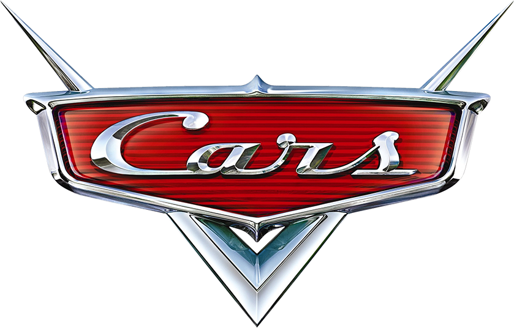
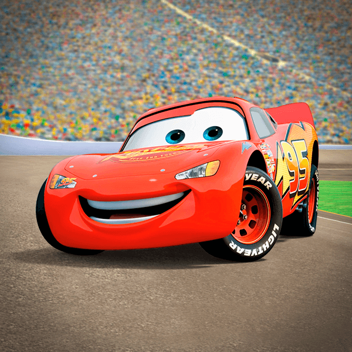
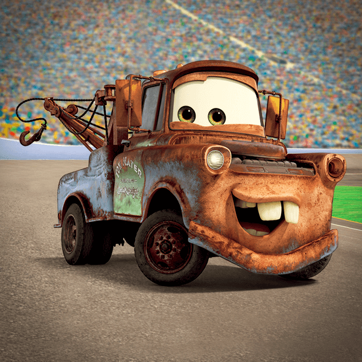
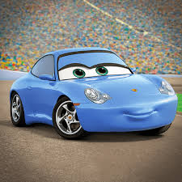
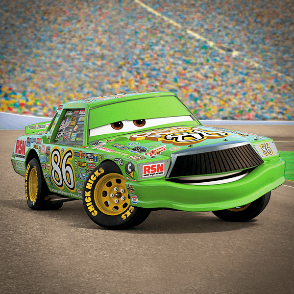

CARROS
A franquia Carros (Cars) é um dos maiores sucessos da parceria entre a Pixar e a Walt Disney Pictures. Lançado originalmente em 2006, o universo de animação se passa em um mundo habitado inteiramente por veículos antropomórficos.

A franquia Carros (Cars) é um dos maiores sucessos da parceria entre a Pixar e a Walt Disney Pictures. Lançado originalmente em 2006, o universo de animação se passa em um mundo habitado inteiramente por veículos antropomórficos.

O Relâmpago McQueen (Lightning McQueen) é o icônico protagonista vermelho da franquia de filmes Carros (Cars), criada pela Disney Pixar. Famoso pelo seu clássico bordão "Kachow!", o carismático carro de corrida número 95 conquistou gerações ao longo de suas jornadas na Copa Pistão.

O Tom Mate (ou simplesmente Mate) é o carismático e enferrujado caminhão-reboque da franquia Carros, produzida pela Disney Pixar. Famoso pela clássica frase "Meu nome é Mate, igual tomate, mas sem o 'to'", ele vive na pacata cidade de Radiator Springs e se tornou o leal melhor amigo do Relâmpago McQueen.

A Sally Carrera é a charmosa Porsche azul-bebê da franquia Carros, produzida pela Disney Pixar. No filme, ela é uma ex-advogada de Los Angeles que buscou uma vida mais tranquila e autêntica na pacata cidade de Radiator Springs, onde se tornou proprietária do Cozy Cone Motel e o grande amor do protagonista Relâmpago McQueen.

O Chick Hicks é o principal antagonista do primeiro filme da franquia Carros, produzida pela Disney Pixar. Ele é um carro de corrida verde bastante egocêntrico e trapaceiro, que ostenta o número 86 nas portas e possui uma grade frontal preta que se assemelha a um grande bigode. Ele passou a carreira inteira correndo sob a sombra do veterano "O Rei"